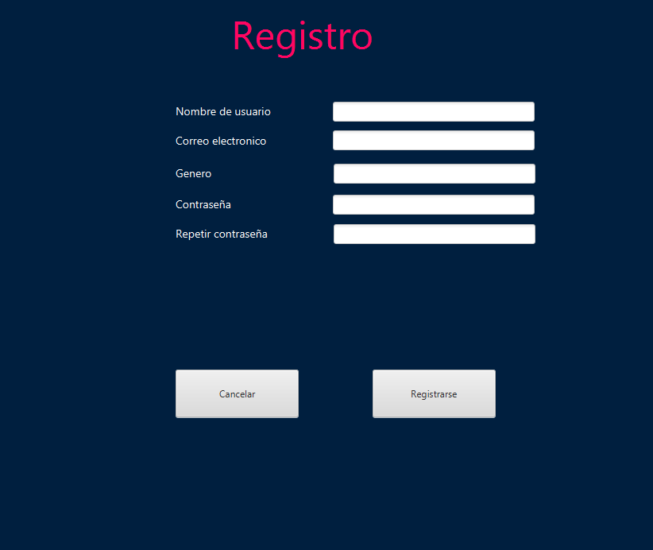
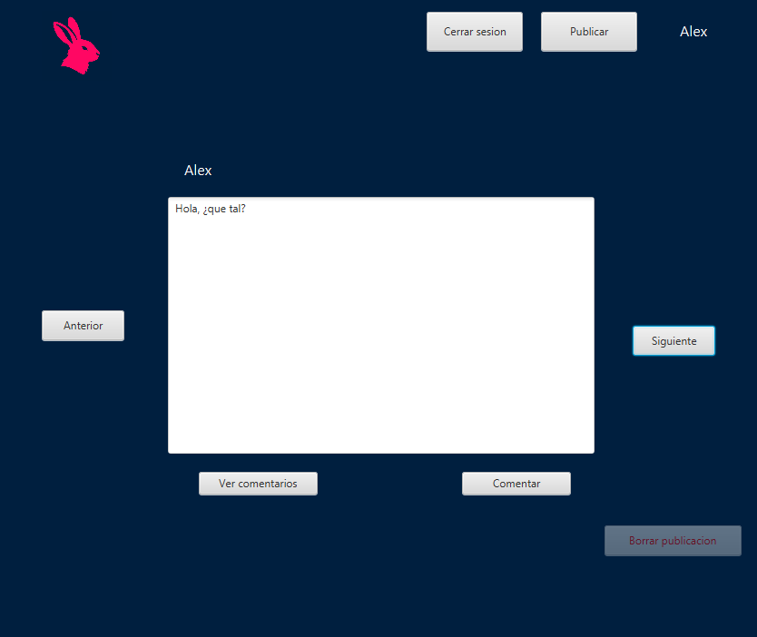
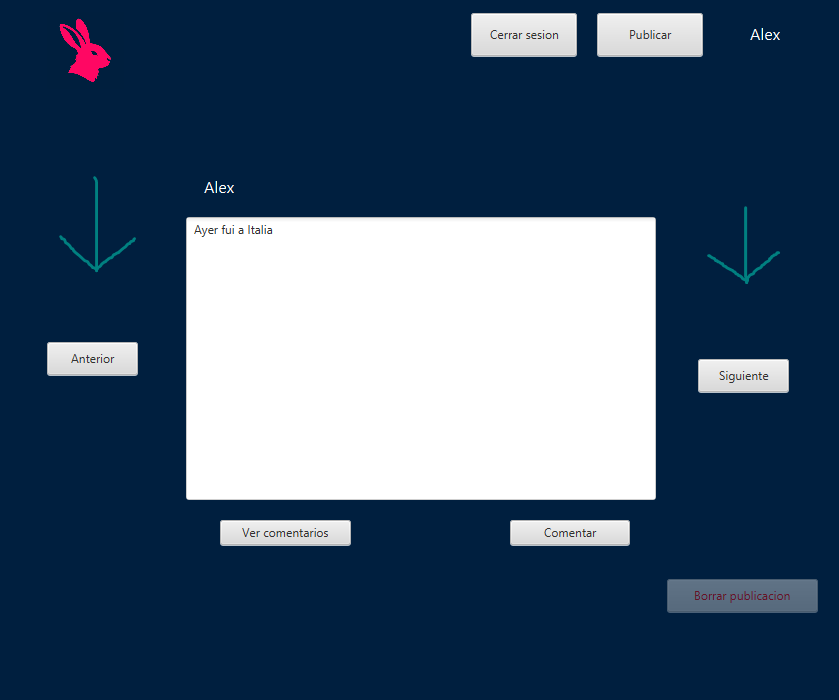

Diseño conceptual

El diseño conceptual del programa Hopper, en este podemos ver como el programa se basa en 5 puntos: Usuario, Administrador, Amigo, Comentario y Publicacion
Modelo entidad-relación

Diagrama entidad-relacion de Hopper, podemos ver sus cinco clases: Usuario, Administrador, Amigo, Comentario y Publicacion
Diagrama de casos de uso
Diagrama de casos de uso del usuario comun, en el cual podemos ver como puede registrarse, iniciar sesion en caso de ya estar registrado, crear publicaciones, agregar a otros usuarios como amigos, actualizar los datos de su perfil y ver publicaciones, donde ademas puede decidir ver los comentarios de dicha publicacion o hacer el mismo un comentario.
En este diagrama de casos de usos, podemos ver las acciones que puede realizar un administrador, algunas compartidas con el usuario comun, respectivamente iniciar sesion, crear publicaciones y ver publicaciones de otros usuarios. Ademas, como administrador puede borrar publicaciones y comentarios de los usuarios.
Base de datos
Aqui podemos ver el diseño de la base de datos del programa Hopper, donde vemos que todas las tablas estan conectadas a traves del usuario, a expepcion de publicacion y comentario que ademas estan conectadas entre ellas
Inicio de sesion

Esta es la pagina de inicio de Hopper, en ella tenemos las opciones para iniciar sesion, registrarse como usuario o iniciar sesion como administrador.

Aqui podemos ver la pagina de registro de Hopper, donde podremos crear nuestro usuario añadiendo los datos de nombre de usuario, correo electronico, fecha de nacimiento, genero y contraseña.
Esta es la pagina de inicio de sesion en Hopper para los usuarios normales, si tu usuario existe, podras iniciar simplemente poniendo tu nombre de usuario y tu contraseña
Y para iniciar como admin tenemos esta pagina, donde al igual que en la anterior, podremos entrar con el usuario y la contraseña
Pagina principal
La pagina principal del programa, desde aqui se podran acceder a todas las funciones del programa.

Este label se actualiza con el nombre del usuario conectado y si se pulsa, lleva a la cuenta del usuario

Con los botones de anterior y siguiente podremos movernos entre todas las publicaciones realizadas.
Con el boton de comentar podras añadir un comentario a la publicacion que estes viendo, el cual se añadira a la lista de comentarios que podras ver con el boton "ver comentarios"

Label que se actualizan con el nombre del usuario que hizo la publicacion, si lo pulsas, visitas la cuenta de ese usuario
Con el boton de publicar podremos añadir una publicacion a la lista para que los usuarios puedan verla, con el boton de cerrar sesion saldremos de la cuenta y volvermos a la pagina inicial
El boton de borrar solo sera visible en caso de ser administrador, y con el podremos borrar las publicaciones que consideremos inadecuadas
Comentarios
Esta es la pagina para ver los comentarios de una publicacion a la que se llega a traves del boton "ver comentarios" de la pagina principal
Al igual que con las publicaciones, podras moverte por los comentarios usando los botones siguiente y anterior, ademas, con el boton Salir podras volver a la pagina principal
Y para añadir un comentario a una publicacion, entraremos a este apartado pulsando Comentar, y despues de añadir el texto que quieras escribir, volveremos a pulsar comentar.
Cuentas de usuario
Aqui podemos ver la cuenta del usuario, en ella te podras mover entre las publicaciones que hayan sido creadas por el usuario
Si la cuenta es la del usuario con el que estamos conectados, tendremos los botones de Modificar cuenta, que nos llevara a una seccion donde modificar la informacion de nuestro usuario y Lista de amigos, donde veremos los usuarios que hayamos añadido como amigos
Esta es la cuenta de un usuario distinto, en vez de poder modificar informacion, tenemos un boton para añadirlo a nuestra lista de amigos, de igual manera tambien podremos ver su lista de amigos
En esta seccion podremos cambiar la informacion de nuestro usuario, cambiamos cualquier dato y si la contraseña y la repeticion coinciden, se realizara el cambio
En la lista de amigos, podremos pulsar el boton de ver lista y esta se actualizara con los nombres de todos los usuarios que esten añadidos como amigos
Administrador
Si desde la pagina de inicio damos a iniciar como administrador nos llevara al login para poder entrar como admin
Desde la pagina principal podremos borrar la publicacion que estemos viendo actualmente y todos los comentarios relacionados a este
Si vemos desde la vista de una cuenta podremos borrar una publicacion como en la pagina principal, o borrar la cuenta de ese usuario al completo